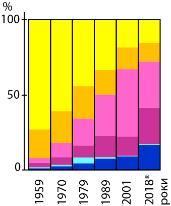

Рівень освіти населення (динаміка)
Особи з вищою освітою
(% осіб з вищою освітою від чисельності населення, старшого за 6 років (2018 р.), за регіонами*)
| до 10,0 | |
| 10,0-15,0 | |
| 15,1-20,0 | |
| 20,1-25,0 | |
| понад 25 |
| * показник % осіб з вищою освітою АР Крим подано за 2013 р. |
Структура населення за освітою (за регіонами)**
|  |
 |
| ** дані АР Крим за 2018 р. недоступні, тому наведено інформацію за 2013 р. |